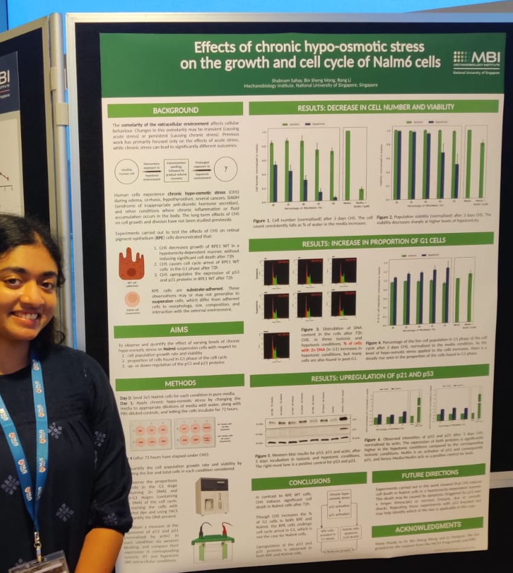
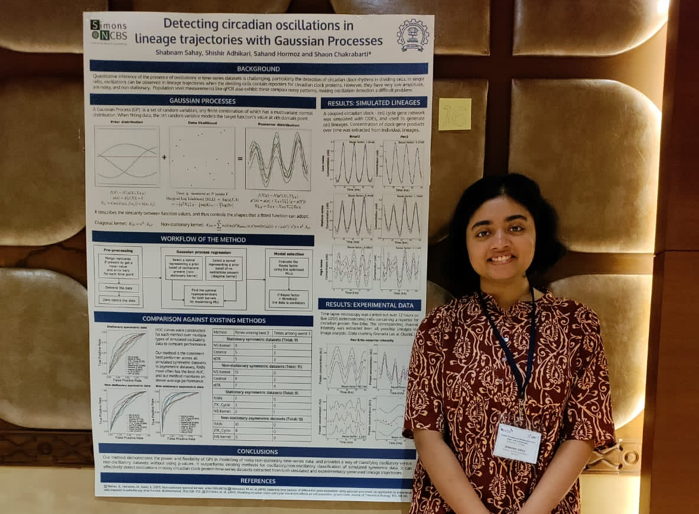
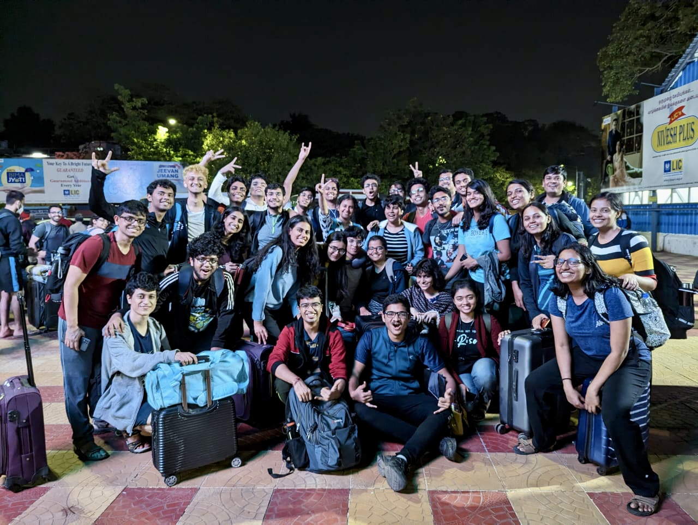
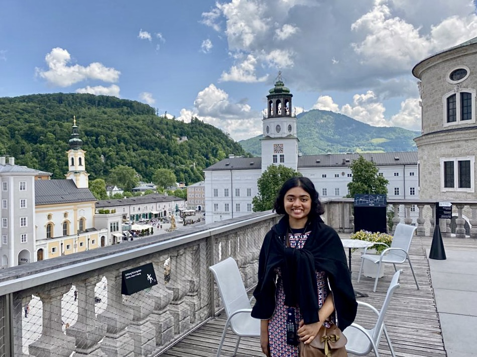
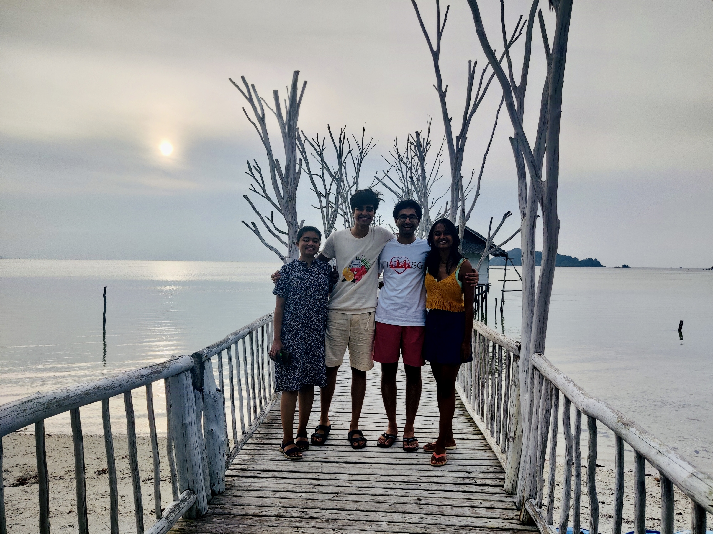
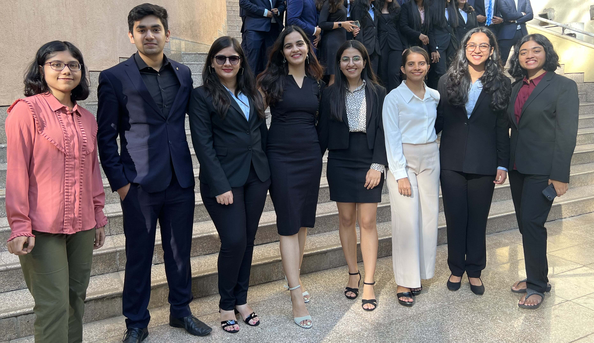
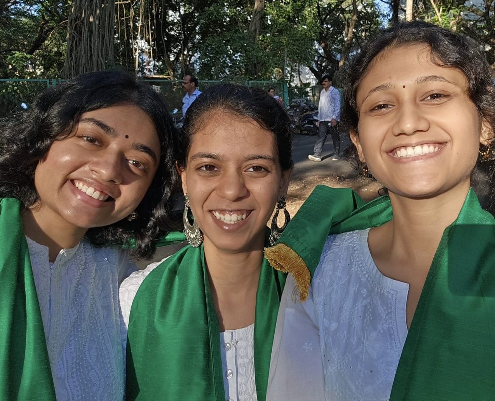

Gallery
First ever poster session @ Mechanobiology Institute, Singapore! (July 2022)
Second poster session @ the Simons Symposium: Cellular Lineages and Development, Alleppey, Kerala (November 2022)

Roots council (IITB's Indian Classical and Folk Arts/ICFA Club), post-successful execution of the first offline student ICFA showcase 'Dharohar' in 3 years (March 2022)

My first and last offline performance in Dharohar (thanks Covid!) (March 2023)

Closing scene of the classical performance in IITB's Annual Insync Dance Show - indebted to some amazing people for giving me the chance to contribute to this (March 2023)
IIT Bombay's Literary Arts Contingent all set for the Inter-IIT Cultural Meet @ Madras (January 2023)
In the midst of a meticulously-planned trip to Salzburg, Austria (June 2023)
A memorable 36-hour-whirlwind trip to Bintan, Indonesia (July 2022)

Setting off to Alibag for three of the fun-nest days of my insti life (April 2023)
CSE department's valedictory function (April 2023)
Freshly (pseudo-)graduated from IIT Bombay (May 2023)